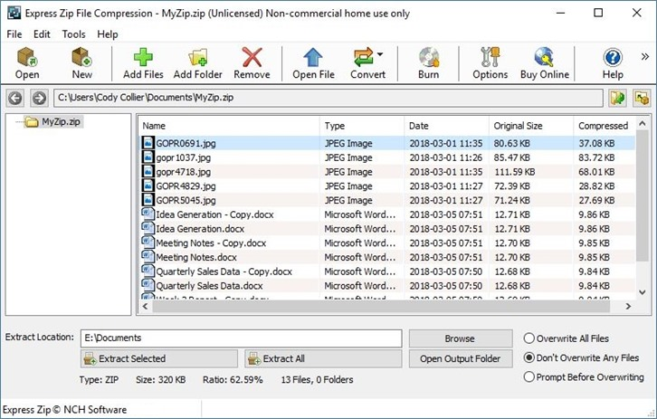
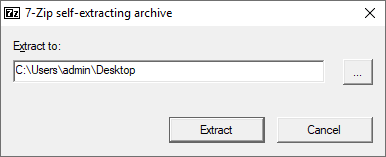

Compresión, sincronización e inventario
Además de crear y mover archivos, un técnico debe comprimir para ahorrar espacio, sincronizar para mantener copias coherentes y realizar inventario del hardware y software del equipo.

1. Compresión de archivos
Las utilidades más usadas son tar (empaquetado) combinado con gzip/xz, y zip/unzip para formato universal.
# Empaquetar y comprimir un directorio tar -cz
vf docs.tar.gz /home/usuario/docs # Extraer tar -xzvf docs.tar.gz # Comprimir en zip zip -r backup.zip carpeta/
2. Sincronización
Además de rsync (visto en copias de seguridad), herramientas como unison o clientes de nube sincronizan bidireccionalmente. La sincronización mantiene varios equipos con los mismos datos.
# Sincronización con rsync hacia un servidor rsync -avh --delete /local/ usuario@servidor:/remoto/ # Sincronización de hora del sistema sudo ntpdate pool.ntp.org
flowchart TD
A[Datos] --> B{Operación}
B -->|Ahorrar espacio| C[Compresión: tar/gzip/zip]
B -->|Coherencia| D[Sincronización: rsync]
B -->|Inventario| E[Software: dpkg/winget]
C --> F[Archivo .tar.gz/.zip]
D --> G[Copia espejo actualizada]
E --> H[Listado de activos]
3. Inventario del sistema
El inventario registra el hardware (CPU, RAM, discos) y el software instalado. En Linux, lshw, lscpu o inxi aportan esta información; en Windows, msinfo32 o systeminfo.
# Resumen de hardware en Linux sudo lshw -short # Información de sistema en Windows systeminfo | findstr /C:"Nombre del sistema"
mindmap
root((Gestión info))
Compresión
tar gzip
zip unzip
Ahorro espacio
Sincronización
rsync
Clientes nube
Coherencia
Inventario
lshw lscpu
msinfo32
dpkg winget
Ejemplo resuelto en clase
Caso práctico: Comprimir y sincronizar archivos.
- Comprime una carpeta: Windows ZIP; Linux
tar -czf backup.tar.gz /ruta. - Verifica que el archivo comprimido ocupa menos.
- Sincroniza dos carpetas con
rsync(solo copia lo que cambió). - Explica para qué sirve la compresión (ahorro de espacio) y la sincronización (respaldos).
graph LR CARP[Carpeta] --> ZIP[Comprimir] CARP --> RSYNC[Sincronizar]
Ejercicio para resolver (que propone el profesor al alumno): El alumno comprime y sincroniza una carpeta, comparando tamaños antes/después.
Ampliación de contenido
Para entender lo anterior (puentes conceptuales)
- Comprimir = "meter la ropa en la maleta". Ocupa menos; ideal para enviar o guardar. Pero hay que descomprimir para usar, así que no es el formato de trabajo.
- Sincronizar ≠ hacer una copia única. La sincro mantione dos lados iguales y actualizados; la copia es un "foto" en un momento. Distinto propósito.
- Inventario = "el carnet del equipo". Saber qué hardware y software hay sin abrir la tapa ni instalar nada. Imprescindible para soporte y auditoría.
Para profundizar en los contenidos actuales
tar + gzip/xz = empaquetado + compresión. tar solo junta varios archivos en uno; gzip/xz lo comprimen. Por eso se usan juntos (tar -czvf). zip hace ambas cosas en un paso y es universal (Windows lo abre sin más).
rsync para sincronizar. Con --delete hace el destino espejo del origen (borra lo que sobra). Útil para mantener copias espejo o varios equipos coherentes. Ojo: --delete borra en destino lo que no esté en origen.
Hora del sistema (ntpdate). Si los relojes de los equipos no coinciden, los logs no cuadran y las copias pueden fallar. ntpdate o timedatectl sincronizan con servidores de hora. Parece menor y es clave en red.
Inventario en Linux y Windows. lshw/lscpu/inxi dan hardware; systeminfo/msinfo32 en Windows. Combinado con la identificación de software (dpkg/winget) tienes el panorama completo.
Compresión y cifrado van aparte. Comprimir ahorra espacio; para que nadie lea el archivo hay que cifrarlo (gpg, o dentro de un contenedor BitLocker). No confundir "más pequeño" con "más seguro".
Revisión didáctica
- tar solo no comprime.
tar -cvfjunta pero no reduce; hace falta-z(gzip) o-J(xz). Error típico creer que .tar ya está comprimido. - rsync --delete borra en destino. Es espejo: lo que no esté en origen se elimina en destino. Peligroso si te equivocas de ruta.
- Sincronizar no es "hacer copia de seguridad". Si borras en origen, la sincro lo borra en destino también. Para backup hace falta una copia que no siga los borrados.
- La hora desincronizada rompe logs. Si los equipos no tienen la misma hora, depurar incidencias es un caos. ntpd/timedatectl importa.
- Comprimido ≠ cifrado. Menos pesao no es más privado; para confidencialidad hay que cifrar aparte.
Hilo de aprendizaje sugerido: (1) compresión: tar vs zip, y por qué tar+gzip → (2) sincronización con rsync (y el peligro de --delete) → (3) hora del sistema (ntp) → (4) inventario hardware (lshw/systeminfo) + software → (5) compresión vs cifrado no son lo mismo → (6) cuándo usar cada utilidad.
Enlaces relacionados
Recursos externos
Vídeos y artículos recomendados para ampliar y preparar el tema: